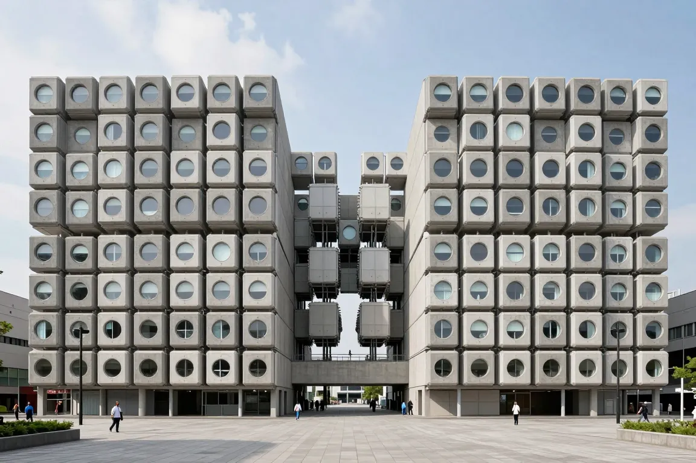

architecture · 1960s–early 1970s · also: Japanese Metabolism, Metabolist architecture
A Japanese style of fixed concrete cores that carry replaceable capsules. Its architects drew the city as a living body that grows, changes and renews its cells.

Core thesis
A city lives like an organism, so its long-life cores must stand fixed and its short-life cells must change.
Design principles
Separate the fixed structure from the units that people replace.
Plan for growth: leave the frame open at the end and on top.
Hang prefabricated capsules on a core of services and stairs.
Show the core as a monumental concrete tower and the capsules as small machines.
Treat the unit as a product that a factory makes and a crane lifts.
Lift the city above the ground, the sea or old streets on huge platforms.
Anti-patterns
A closed, finished building that cannot grow
Capsules that look like part of the wall and hide their joints